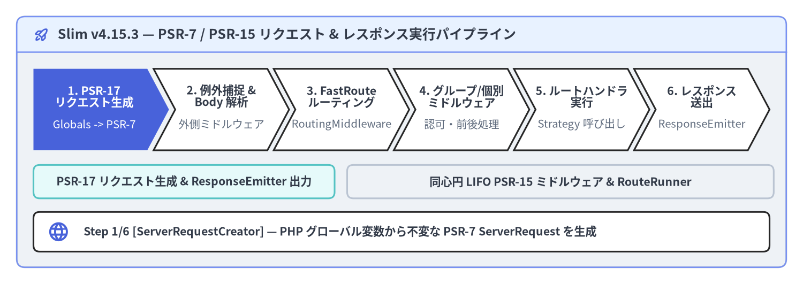
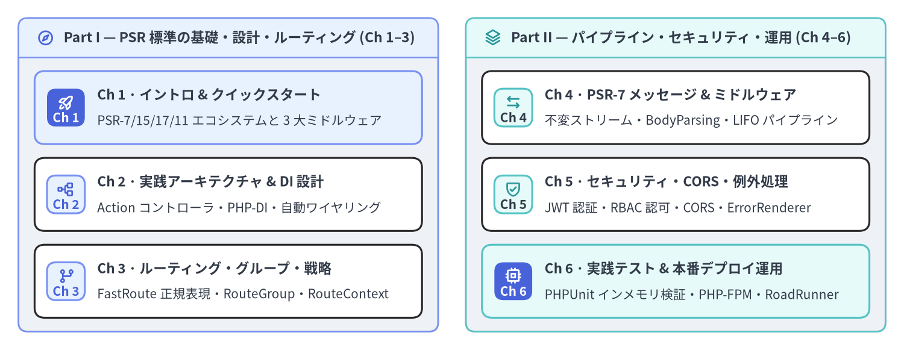

Slim Framework v4.15.3 — 実践ユーザーガイド
Slim（v4.15.3）は、PHP-FIG の PSR 標準インターフェースを中核に据えて設計された軽量かつ堅牢な PHP マイクロフレームワークです。PSR-7（イミュータブルな HTTP メッセージとストリーム）、PSR-15（同心円 LIFO ミドルウェアとリクエストハンドラ）、PSR-17（HTTP ファクトリ）、PSR-11（DI コンテナ）、そして Nikic FastRoute による高速な正規表現ルーティングを統合しています。本サイトは最初のエンドポイント構築からエンタープライズ規模のモジュラー設計までを日英バイリンガルで体系的に解説する非公式ユーザーガイドです。

Source Code
from drawlib.anim import Animation
from drawlib.canvas import save, setup
from drawlib.icons import phosphor
from drawlib.shapes import rectangle
from drawlib.smartarts import ChevronProcess, Panel
from drawlib.styles import Styles
from drawlib.text import text
setup(width=192, height=68, dpi=150)
anim = Animation(fps=0.5)
stages = [
("1. PSR-17\nリクエスト生成", "Globals -> PSR-7"),
("2. 例外捕捉 &\nBody 解析", "外側ミドルウェア"),
("3. FastRoute\nルーティング", "RoutingMiddleware"),
("4. グループ/個別\nミドルウェア", "認可・前後処理"),
("5. ルートハンドラ\n実行", "Strategy 呼び出し"),
("6. レスポンス\n送出", "ResponseEmitter"),
]
stage_notes = [
(
phosphor.globe,
"Step 1/6 [ServerRequestCreator] — PHP グローバル変数から不変な PSR-7 ServerRequest を生成",
),
(
phosphor.shield_check,
"Step 2/6 [Error & BodyParsing] — ErrorMiddleware で全体を包み JSON/XML/Form ボディを解析",
),
(
phosphor.git_branch,
"Step 3/6 [RoutingMiddleware] — FastRoute で URI とメソッドを照合し RouteContext 属性を付与",
),
(
phosphor.stack,
"Step 4/6 [Group & Route Middleware] — ルートグループおよびルート固有のミドルウェアを順次実行",
),
(
phosphor.lightning,
"Step 5/6 [Route Handler] — PSR-11 コンテナでコントローラを解決し Strategy 経由で呼び出し",
),
(
phosphor.rocket_launch,
"Step 6/6 [ResponseEmitter] — ステータス行・ヘッダ・PSR-7 ボディストリームをクライアントへ送出",
),
]
for step in range(len(stages)):
is_last = step == len(stages) - 1
with anim.frame(duration=4.0 if is_last else 2.0, clear=True):
outer = Panel(
"Slim v4.15.3 — PSR-7 / PSR-15 リクエスト & レスポンス実行パイプライン",
style=Styles.Neutral.patch(shape_r=2.0),
header_style=Styles.PrimaryNeutral.patch(shape_line_width=1.2),
text_style=Styles.DarkBold.patch(text_size=12.0),
icon=phosphor.rocket_launch,
icon_style=Styles.PrimaryBold,
header_variant="filled",
header_height=8.5,
)
outer.draw((4.0, 4.0), width=184.0, height=60.0)
s_style = Styles.SecondaryNeutral if step in (0, 5) else Styles.Neutral
r_style = Styles.PrimaryNeutral if 1 <= step <= 4 else Styles.Neutral
rectangle((44.0, 24.5), width=72.0, height=8.0, style=s_style.patch(shape_r=1.5))
text(
(44.0, 24.5),
"PSR-17 リクエスト生成 & ResponseEmitter 出力",
style=Styles.DarkBold.patch(text_size=10.2),
)
rectangle((134.0, 24.5), width=102.0, height=8.0, style=r_style.patch(shape_r=1.5))
text(
(134.0, 24.5),
"同心円 LIFO PSR-15 ミドルウェア & RouteRunner",
style=Styles.DarkBold.patch(text_size=10.2),
)
proc = ChevronProcess(
style=Styles.White,
text_style=Styles.DarkBold.patch(text_size=10.2),
description_style=Styles.Muted.patch(text_size=9.8),
corner_angle=62.0,
spacing=1.5,
flat_left_end=True,
)
for i, (title, desc) in enumerate(stages):
if i == step:
c_style = Styles.PrimaryFlat
t_style = Styles.WhiteBold.patch(text_size=10.2)
d_style = Styles.White.patch(text_size=9.8)
elif i < step:
c_style = Styles.SecondaryNeutral if i == 0 else Styles.PrimaryNeutral
t_style = Styles.DarkBold.patch(text_size=10.2)
d_style = Styles.Dark.patch(text_size=9.8)
else:
c_style = Styles.White
t_style = Styles.DarkBold.patch(text_size=10.2)
d_style = Styles.Muted.patch(text_size=9.8)
proc.add(
title,
description=desc,
style=c_style,
text_style=t_style,
description_style=d_style,
)
proc.draw(xy=(8.0, 32.0), width=176.0, height=19.5)
rectangle((96.0, 12.5), width=176.0, height=9.5, style=Styles.White.patch(shape_r=1.5))
note_icon, note_text = stage_notes[step]
note_icon((14.0, 12.5), width=5.2, style=Styles.PrimaryBold)
text(
(20.0, 12.5),
note_text,
style=Styles.DarkBold.patch(text_size=10.2, halign="left"),
)
save()
Slim v4.15.3 の全体像と特徴
独自の HTTP オブジェクトや密結合なコンテナ・ORM を抱え込むフルスタックフレームワークとは異なり、Slim 4 は PHP-FIG の PSR 標準インターフェースを中心に設計されています。そのため、プロジェクトの要件に応じて最適な PSR-7 実装（slim/psr7、nyholm/psr7、guzzlehttp/psr7、laminas/laminas-diactoros、httpsoft/http-message）や PSR-11 コンテナ（php-di/php-di など）を自由に選択・交換できます。
| 機能領域 | v4.15.3 の標準規格・主要コンポーネント |
アプリケーション開発におけるメリット |
|---|---|---|
| 対応 PHP バージョン | PHP 7.4 – 8.5（全ファイル strict_types=1） |
PHP 8.x の Attribute、Readonly クラス、Enum、厳密な型検査に完全対応 |
| HTTP メッセージ層 | PSR-7（psr/http-message ^1.1 || ^2.0）& PSR-17（psr/http-factory ^1.1） |
イミュータブルな ServerRequestInterface / ResponseInterface とファクトリ自動検出 |
| ミドルウェア & ハンドラ | PSR-15（psr/http-server-middleware & psr/http-server-handler ^1.0） |
同心円 LIFO ミドルウェア構造（MiddlewareDispatcher）により PSR-15 資産をそのまま再利用可能 |
| 依存性注入（DI） | PSR-11（psr/container ^1.0 || ^2.0）& CallableResolver |
Class:method 表記や __invoke() 単一アクションコントローラ、PSR-15 クラスの遅延解決 |
| URL ルーティング | FastRoute（nikic/fast-route ^1.3） |
正規表現プレースホルダ、ネスト可能な RouteGroup、名前付き URL 生成、高速ルートキャッシュ |
| 例外処理 & ロギング | ErrorMiddleware、HttpSpecializedException、PSR-3（psr/log） |
Accept ヘッダに応じた JSON / XML / HTML / PlainText エラー出力と構造化ログ連携 |
25 行で完結する最小フロントコントローラ
Slim 4 アプリケーションの最小構成は、AppFactory::create() と 3 つの基本ミドルウェア（addBodyParsingMiddleware()、addRoutingMiddleware()、addErrorMiddleware()）、そしてルート定義だけでシンプルに記述できます。
<?php
declare(strict_types=1);
use Psr\Http\Message\ResponseInterface as Response;
use Psr\Http\Message\ServerRequestInterface as Request;
use Slim\Factory\AppFactory;
require __DIR__ . '/../vendor/autoload.php';
$app = AppFactory::create();
// 1. JSON / form-urlencoded / XML リクエストボディを自動パース
$app->addBodyParsingMiddleware();
// 2. FastRoute によるルート解決を実行し RouteContext 属性をリクエストへ付与
$app->addRoutingMiddleware();
// 3. 最外層の例外キャッチ境界（LIFO のため最後に追加したミドルウェアが最初に実行される）
$app->addErrorMiddleware(displayErrorDetails: true, logErrors: true, logErrorDetails: true);
$app->get('/api/v1/users/{id:[0-9]+}', function (Request $request, Response $response, array $args): Response {
$payload = json_encode([
'id' => (int) $args['id'],
'status' => 'active',
], JSON_THROW_ON_ERROR);
$response->getBody()->write($payload);
return $response->withHeader('Content-Type', 'application/json');
})->setName('users.show');
$app->run();
全 6 章・12 ページのカリキュラム構成
本ガイドは 全 6 章・12 ページで構成されており、PSR 標準とフロントコントローラの基礎から、Single-Action Controller を用いたエンタープライズ設計、PHP-DI による自動ワイヤリング、FastRoute キャッシュ、同心円 PSR-15 ミドルウェアパイプライン、JWT / CORS セキュリティ、コンテンツネゴシエーション対応のエラーレンダラ、PHPUnit によるインメモリ HTTP テスト、そして本番環境での PHP-FPM / 常駐ワーカー運用までを体系的に解説します。

Source Code
from drawlib.canvas import save, setup
from drawlib.icons import phosphor
from drawlib.smartarts import CardList, Panel
from drawlib.styles import Styles
setup(width=196, height=76, dpi=150)
left_panel = Panel(
"Part I — PSR 標準の基礎・設計・ルーティング (Ch 1–3)",
style=Styles.Neutral.patch(shape_r=2.0),
header_style=Styles.PrimaryNeutral.patch(shape_line_width=1.2),
text_style=Styles.DarkBold.patch(text_size=11.0),
icon=phosphor.compass,
icon_style=Styles.PrimaryBold,
header_variant="filled",
header_height=8.5,
)
left_panel.draw((4.0, 4.0), width=91.0, height=68.0)
l_xy, l_w, l_h = left_panel.get_content_box((4.0, 4.0), width=91.0, height=68.0, padding=(3.5, 3.0))
cl_left = CardList(
style=Styles.White,
text_style=Styles.DarkBold.patch(text_size=10.8),
description_style=Styles.Dark.patch(text_size=10.0),
badge_shape="rounded_rect",
badge_style=Styles.PrimaryNeutral,
badge_text_style=Styles.PrimaryBold.patch(text_size=10.0),
icon_style=Styles.PrimaryBold,
direction="vertical",
spacing=3.0,
)
cl_left.add(
"Ch 1 · イントロ & クイックスタート",
"PSR-7/15/17/11 エコシステムと 3 大ミドルウェア",
badge_text="Ch 1",
icon=phosphor.rocket_launch,
style=Styles.PrimaryNeutral,
badge_style=Styles.PrimaryFlat,
badge_text_style=Styles.WhiteBold.patch(text_size=10.0),
icon_style=Styles.WhiteBold,
)
cl_left.add(
"Ch 2 · 実践アーキテクチャ & DI 設計",
"Action コントローラ・PHP-DI・自動ワイヤリング",
badge_text="Ch 2",
icon=phosphor.tree_structure,
)
cl_left.add(
"Ch 3 · ルーティング・グループ・戦略",
"FastRoute 正規表現・RouteGroup・RouteContext",
badge_text="Ch 3",
icon=phosphor.git_branch,
)
cl_left.draw(xy=l_xy, width=l_w, height=l_h)
right_panel = Panel(
"Part II — パイプライン・セキュリティ・運用 (Ch 4–6)",
style=Styles.Neutral.patch(shape_r=2.0),
header_style=Styles.SecondaryNeutral.patch(shape_line_width=1.2),
text_style=Styles.DarkBold.patch(text_size=11.0),
icon=phosphor.stack,
icon_style=Styles.SecondaryBold,
header_variant="filled",
header_height=8.5,
)
right_panel.draw((101.0, 4.0), width=91.0, height=68.0)
r_xy, r_w, r_h = right_panel.get_content_box((101.0, 4.0), width=91.0, height=68.0, padding=(3.5, 3.0))
cl_right = CardList(
style=Styles.White,
text_style=Styles.DarkBold.patch(text_size=10.8),
description_style=Styles.Dark.patch(text_size=10.0),
badge_shape="rounded_rect",
badge_style=Styles.SecondaryNeutral,
badge_text_style=Styles.DarkBold.patch(text_size=10.0),
icon_style=Styles.SecondaryBold,
direction="vertical",
spacing=3.0,
)
cl_right.add(
"Ch 4 · PSR-7 メッセージ & ミドルウェア",
"不変ストリーム・BodyParsing・LIFO パイプライン",
badge_text="Ch 4",
icon=phosphor.arrows_left_right,
)
cl_right.add(
"Ch 5 · セキュリティ・CORS・例外処理",
"JWT 認証・RBAC 認可・CORS・ErrorRenderer",
badge_text="Ch 5",
icon=phosphor.shield_check,
)
cl_right.add(
"Ch 6 · 実践テスト & 本番デプロイ運用",
"PHPUnit インメモリ検証・PHP-FPM・RoadRunner",
badge_text="Ch 6",
icon=phosphor.cpu,
style=Styles.SecondaryNeutral,
badge_style=Styles.PrimaryFlat,
badge_text_style=Styles.WhiteBold.patch(text_size=10.0),
icon_style=Styles.WhiteBold,
)
cl_right.draw(xy=r_xy, width=r_w, height=r_h)
save()
| 章 | ページ構成と主要テーマ | 扱う主な Slim 4 クラス & インターフェース |
|---|---|---|
| 1. イントロ & クイックスタート | Slim 4 の設計思想と PSR 標準 · クイックスタートと基本ミドルウェア | App, AppFactory, ServerRequestCreatorFactory, Psr17FactoryProvider, ResponseEmitter |
| 2. 実践アーキテクチャ & DI 設計 | モジュラー設計と Action コントローラ · PSR-11 コンテナと Callable 解決 | AppFactory::createFromContainer(), CallableResolver, AdvancedCallableResolverInterface, ContainerInterface |
| 3. ルーティング・グループ・呼び出し戦略 | FastRoute パターン・グループ・キャッシュ · 呼び出し戦略（Strategy）と RouteContext | RouteCollectorProxy, RouteCollector, RouteGroup, RouteParser, RouteContext, RequestResponseNamedArgs |
| 4. PSR-7 メッセージ & ミドルウェア | PSR-7 リクエスト・レスポンス・ストリーム · PSR-15 同心円 LIFO ミドルウェアパイプライン | BodyParsingMiddleware, MiddlewareDispatcher, RoutingMiddleware, MethodOverrideMiddleware, ContentLengthMiddleware |
| 5. セキュリティ・CORS・例外ハンドリング | JWT 認証・RBAC 認可・CORS 設計 · ErrorMiddleware とカスタム ErrorRenderer | ErrorMiddleware, ErrorHandler, HttpSpecializedException, JsonErrorRenderer, ErrorRendererInterface |
| 6. 実践テスト & 本番デプロイ運用 | PHPUnit によるインメモリ HTTP テスト · Nginx + PHP-FPM と常駐ワーカー運用 | $app->handle($request), RouteCollector::setCacheFile(), OPcache 最適化, RoadRunner / FrankenPHP ワーカー |
公式リソースと関連ポータル
- Slim Framework への敬意と公式ドキュメント: Slim Framework は Josh Lockhart 氏によって創設され、Slim Framework チーム（Josh Lockhart、Andrew Smith、Rob Allen、Pierre Berube、Gabriel Manricks 各氏）およびコミュニティによって MIT ライセンスのもと開発・保守されています。公式ドキュメントや最新情報については https://www.slimframework.com/ および github.com/slimphp/Slim をご参照ください。
- 本スイートの関連ポータル:
- Slim 4 User Guide (
slim.drawlib.com) — 実践ユーザーガイドと設計ベストプラクティス（本サイト）。 - Slim 4 API Reference (
slim.drawlib.com/api/) — Slimv4.15.3の全クラス・インターフェース・メソッドの詳細リファレンス。 - Slim 4 Internal Architecture (
slim.drawlib.com/architecture/) —App、MiddlewareDispatcher、CallableResolver、FastRoute 統合の内部実装解説。 - PNI501 Audit Report (
slim.drawlib.com/reports/pni501/) — Slim 4 コードベースの品質・セキュリティ監査レポート。
- Slim 4 User Guide (
- 読み進め方: まずは 第 1 章：Slim 4 の設計思想と PSR 標準 で PSR-7 / PSR-15 / PSR-17 / PSR-11 と FastRoute の全体像を掴むか、クイックスタートと基本ミドルウェア で実際に動作するコードをお試しください。